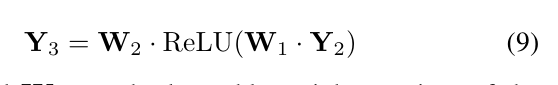
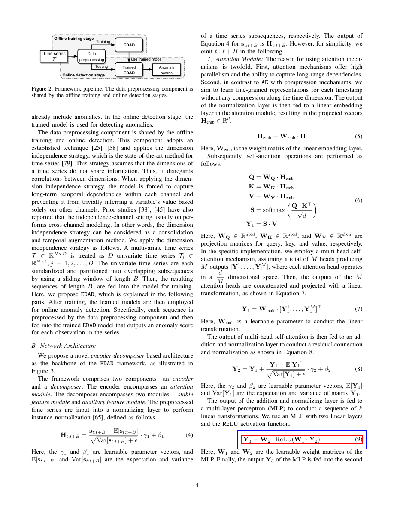

formula_013 — Page 4
Section: Method (conf=medium)
Final Origin: mineru_latex
Equation Group: group_p4_2 (order 10)
Crop Padding: 1%px
Edge Ink (top/bottom): 0.000 / 0.034
Risk Flags: NONE
Formula M2 Ready: YES

Crop (padded 1%px)

Overlay (red=original, blue=padded)
Nearby Text Before:
er-decomposer based architecture as the backbone of the EDAD framework, as illustrated in Figure 3. The framework comprises two components—an encoder and a decomposer. The encoder encompasses an attention module. The decomposer encompasses two modules—stable feature module and auxiliary feature modu
Nearby Text After:
Here, the \( \gamma_{1} \) and \( \beta_{1} \) are learnable parameter vectors, and \( E[s_{t:t+B}] \) and \( Var[s_{t:t+B}] \) are the expectation and variance
LaTeX:
\mathbf {Y} _ {3} = \mathbf {W} _ {2} \cdot \operatorname{ReLU} \left(\mathbf {W} _ {1} \cdot \mathbf {Y} _ {2}\right) \tag {9}